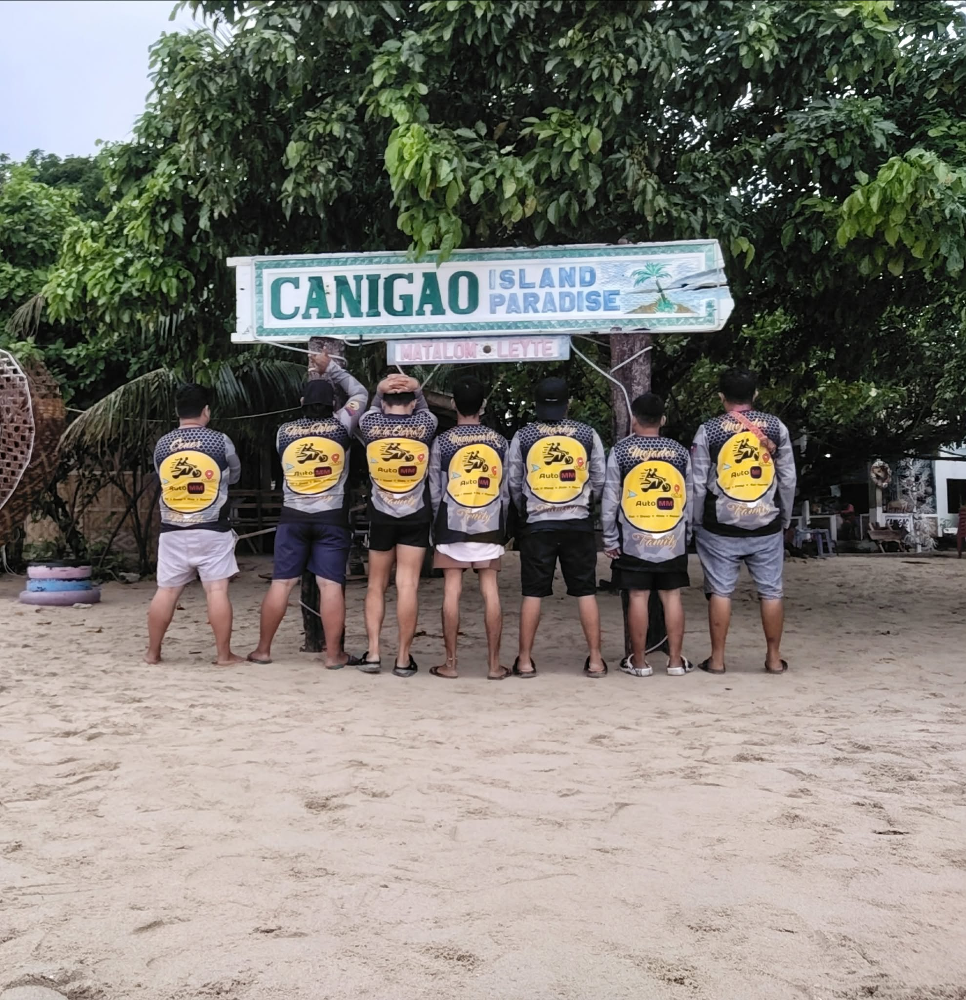

AutoMM is Tacloban City's official Maxim rider community — built on brotherhood, connection, and hustle. We're not just riders; we're family on every delivery.
AutoMM is a proud community of Maxim delivery riders based in Tacloban City, Leyte. We started as a small circle of riders who believed that staying connected makes us stronger — and today, we ride as one unified brotherhood under the Maxim platform.
The pioneers and core members who built and lead this Maxim rider community from the ground up in Tacloban City.
The pioneer who started AutoMM in Tacloban City and built this Maxim rider community from scratch.
Leads the overall direction and vision of the AutoMM community in Tacloban.
Serving Tacloban City through Maxim — fast, reliable, and community-driven deliveries every single day.
Need a ride around Tacloban City? Book a Maxim motorcycle and our AutoMM riders will take you safely and affordably.
Most PopularNeed a ride around Tacloban City? Book a Maxim car and our AutoMM riders will take you safely and affordably.
Book via Maxim AppNeed something from the palengke or store in Tacloban? We'll buy it and bring it straight to your door — quick and hassle-free.
Book via Maxim AppHot meals from your favorite Tacloban restaurants and carenderias, delivered fresh and fast right to your door.
Book via MaximJoin our scheduled group rides and outings around Leyte and Eastern Visayas. Brotherhood on every kilometer of the road.
View EventsEvery month, we recognize the best Maxim rider in Tacloban who goes above and beyond — in deliveries, attitude, and community spirit.
"[A short quote or message from the top rider]"
Every ride around Tacloban and Leyte is a memory worth keeping. Every outing is a story worth telling.

Want to share your ride photos with the community?
Share in CommunityAutoMM is more than a Maxim rider group — it's a family right here in Tacloban City. Connect with us, join our group chats, and be part of something that moves.
Every Maxim rider in Tacloban is family. We look out for one another on and off the road.
We deliver fast across Tacloban because our clients' time and trust matter to us every day.
We ride smart on Tacloban roads. Safety gear, safe speeds, safe deliveries — always.
We don't just ride for pay — we ride because we genuinely love it and love this community.
Are you a Maxim rider based in Tacloban City? AutoMM welcomes you. Join a community built by riders, for riders — where every delivery is done with brotherhood and pride.
Upload your photos via the AutoMM Facebook group